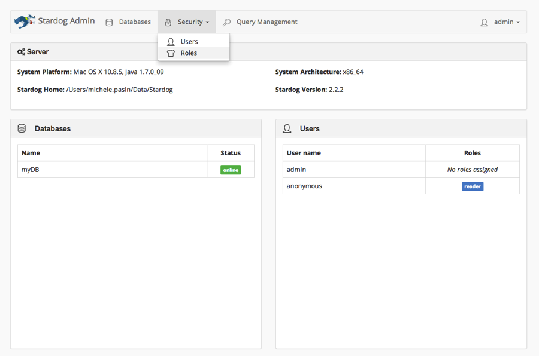
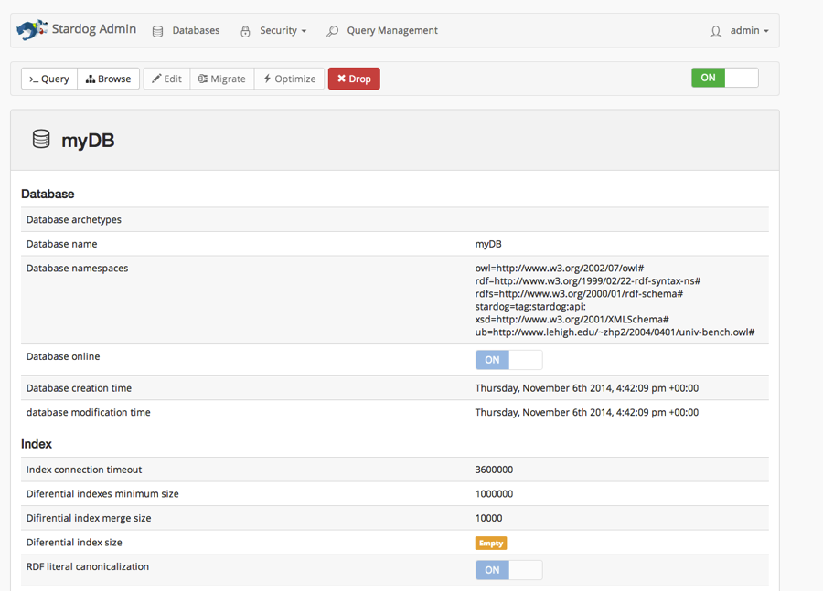

Installing Stardog triplestore on mac os
Stardog is an enterprise-level triplestore developed by clarkparsia.com. It combines tools to store and query RDF data with more advanced features for inference and data analytics – in particular via the built-in Pellet Java reasoner. All of this, combineded with a user experience which is arguably the best you can currently find in the market.
1. Requirements
OSX: Mavericks 10.9.5 (that’s what I used, but it’ll work on older versions too).
JAVA: available from Apple.
Stardog: grab the free community edition at http://www.stardog.com/ (you can also get the ‘developer’ version for a 30-days trial, which is actually what I did).
2. Setting up
Good news, it can’t get any simpler than this. Just unpack the Stardog installer, and you’re pretty much done (see the online docs for more info).
Stardog needs to know where to store its databases, so you do that by adding a couple of lines to your .bash_profile file:
export STARDOG_HOME="/Users/michele.pasin/Data/Stardog" # databases will be stored here export PATH="/Applications/stardog-2.2.2/bin:$PATH" # add stardog commands to the path alias cdstardog="cd /Applications/stardog-2.2.2" # just a handy shortcut
Finally, copy the license key file (which should have come together with the installer) into the data folder:
$ cp stardog-license-key.bin $STARDOG_HOME
3. Running Stardog
The stardog-admin server start command is used to start and stop the server. Then you can use the stardog-admin db create command to create a DB and load some data. For example:
[michele.pasin]@Tartaruga:~>cdstardog
[michele.pasin]@l5611:/Applications/stardog-2.2.2>stardog-admin server start
************************************************************
This copy of Stardog is licensed to MIk (michele.pasin@gmail.com), michelepasin.org
This is a Community license
This license does not expire.
************************************************************
:;
;; `;`:
`'+', :: `++ `;:`
+###++, ,#+ `++ .
##+.,', '#+ ++ +
,## ####++ ####+: ##,++` .###+++ .####+ ####++++#
`##+ ####+' ##+#++ ###++``###'+++ `###'+++ ###`,++,:
####+ ##+ ++. ##: ### `++ ### `++` ##` ++:
###++, ##+ ++, ##` ##; `++ ##: ++; ##, ++:
;+++ ##+ ####++, ##` ##: `++ ##: ++' ;##'#++
;++ ##+ ### ++, ##` ##' `++ ##; ++: ####+
,. +++ ##+ ##: ++, ##` ### `++ ### .++ '#;
,####++' +##++ ###+#+++` ##` :####+++ `####++' ;####++`
`####+; ##++ ###+,++` ##` ;###:++ `###+; `###++++
## `++
.## ;++
#####++`
`;;;.
************************************************************
Stardog server 2.2.2 started on Thu Nov 06 16:41:23 GMT 2014.
Stardog server is listening on all network interfaces.
SNARL server available at snarl://localhost:5820.
HTTP server available at http://localhost:5820.
STARDOG_HOME=/Users/michele.pasin/Data/Stardog
LOG_FILE=/Users/michele.pasin/Data/Stardog/stardog.log
[michele.pasin]@l5611:/Applications/stardog-2.2.2>stardog-admin db create -n myDB examples/data/University0_0.owl
Bulk loading data to new database.
Parsing triples: 100% complete in 00:00:00 (8.6K triples - 13.2K triples/sec)
Parsing triples finished in 00:00:00.646
Creating index: 100% complete in 00:00:00 (93.0K triples/sec)
Creating index finished in 00:00:00.092
Computing statistics: 100% complete in 00:00:00 (60.9K triples/sec)
Computing statistics finished in 00:00:00.140
Loading complete.
Inserted 8,521 unique triples from 8,555 read triples in 00:00:01.050 at 8.1K triples/sec
Bulk load complete. Loaded 8,521 triples from 1 file(s) in 00:00:01 @ 8.4K triples/sec.
Successfully created database 'myDB'.
[michele.pasin]@Tartaruga:/Applications/stardog-2.2.2>stardog query myDB "SELECT DISTINCT ?s WHERE { ?s ?p ?o } LIMIT 10"
+--------------------------------------------------------+
| s |
+--------------------------------------------------------+
| tag:stardog:api: |
| http://www.University0.edu |
| http://www.Department0.University0.edu |
| http://www.Department0.University0.edu/FullProfessor0 |
| http://www.Department0.University0.edu/Course0 |
| http://www.Department0.University0.edu/GraduateCourse0 |
| http://www.Department0.University0.edu/GraduateCourse1 |
| http://www.University84.edu |
| http://www.University875.edu |
| http://www.University241.edu |
+--------------------------------------------------------+
Query returned 10 results in 00:00:00.061
In the snippet above, I’ve just loaded the test dataset that comes with Stardog into the myDB database, then queried it using the stardog query command.
There’s a fancy user interface too, which can be accessed by going to http://localhost:5820 (note: by default, you can log in with usr/psw = admin).


4. Loading a big dataset
As in my previous post, I’ve tried loading the NPG Articles dataset available at nature.com’s legacy linked data site data.nature.com. The dataset contains around 40M triples describing (at the metadata level) all that’s been published by NPG and Scientific American from 1845 till nowadays. The file size is ~6 gigs so it’s not a huge dataset. Still, something big enough to pose a challenge to my macbook pro (8gigs RAM).
First off, I tried loading the dataset via the command line by passing an extra argument when creating a new database:
[michele.pasin]@Tartaruga:~/Downloads/NPGcitationsGraph/articles.2012-07-16>stardog-admin db create -n npgArticles articles.nq Bulk loading data to new database. Parsing triples: 100% complete in 00:01:48 (10.1M triples - 93.3K triples/sec) Parsing triples finished in 00:01:48.678 Creating index: 100% complete in 00:00:19 (525.1K triples/sec) Creating index finished in 00:00:19.311 Computing statistics: 100% complete in 00:00:05 (1748.1K triples/sec) Computing statistics finished in 00:00:05.782 Loading complete. Inserted 10,107,653 unique triples from 10,140,000 read triples in 00:02:16.178 at 74.5K triples/sec Bulk load complete. Loaded 10,107,653 triples from 1 file(s) in 00:02:16 @ 74.3K triples/sec. Errors were encountered during loading: File: /Users/michele.pasin/Downloads/NPGcitationsGraph/articles.2012-07-16/articles.nq Message: '2000-13-01' is not a valid value for datatype http://www.w3.org/2001/XMLSchema#date [line 10144786] Successfully created database 'npgArticles'.
As you can see, that didn’t work as expected: only 10M out of the 40M triples were loaded, because of an XML parsing error the installer encountered.
After some googling and pinging the mailing list, I discover that Stardog is actually right: the parsing error derives from the fact that valid values for XMLSchema#date are ISO8601 Dates. My data contained an XML date 2000-13-01 which is wrong – that should be 2000-01-13 instead.
What’s interesting is that I’ve previously managed to load the same dataset with other triple stores without any problems. How was that possible?
The online documentation provides the answer:
RDF parsing in Stardog is strict: it requires typed RDF literals to match their explicit datatypes, URIs to be well-formed, etc. In some cases, strict parsing isn’t ideal, so it may be disabled using the –strict-parsing=FALSE to disable it.
Also, from the mailing list:
By default, if you say “1.5”^^xsd:int or “twelve point four”^^xsd:float, Stardog is going to complain. While it’s perfectly legal to have that in RDF, you can run into trouble later on, particularly when doing query evaluation with filters that would handle those literal values where you will hit the dark corners of the SPARQL spec.
So, the way to load a (partially or potentially broken) dataset without having to worry about it too much is to use the strict.parsing=false flag:
>stardog-admin db create -o strict.parsing=false -n articlesNPG2 articles.nq Bulk loading data to new database. Parsing triples: 100% complete in 00:05:55 (39.4M triples - 110.7K triples/sec) Parsing triples finished in 00:05:55.643 Creating index: 100% complete in 00:01:17 (510.7K triples/sec) Creating index finished in 00:01:17.122 Computing statistics: 100% complete in 00:00:21 (1789.2K triples/sec) Computing statistics finished in 00:00:21.944 Loading complete. Inserted 39,262,620 unique triples from 39,384,548 read triples in 00:07:51.402 at 83.5K triples/sec Bulk load complete. Loaded 39,262,620 triples from 1 file(s) in 00:07:51 @ 83.3K triples/sec. Successfully created database 'articlesNPG2'.
Job done in around 7 minutes!
Conclusion:
Extremely easy to install, efficient and packed with advanced features (inferencing and data-checking among the most useful ones imho). Also, as far as the UX and web interface goes, I doubt you can get any better than this with triplestores.
It’s a commercial product, of course, so you may not expect anything less than that. However the community edition (which is free) allows for 10 databases & 25M triples per db – which may be just fine for many projects.
If we had more tools as accessible as this one, I do think rdf triplestores would have a much higher uptake by now!
5. Useful resources
> Documentation
> Mailing list
> Python API